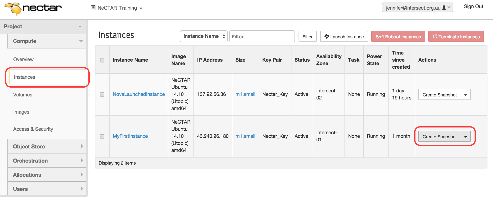
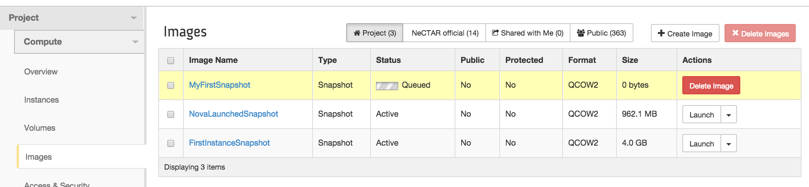
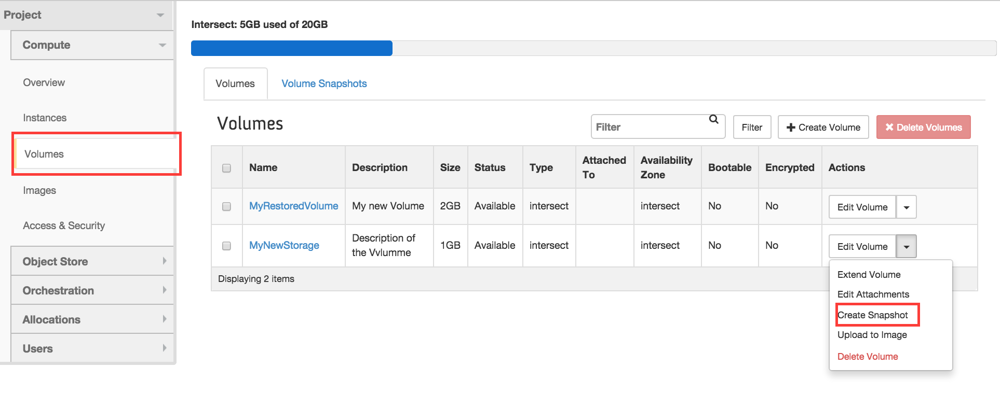
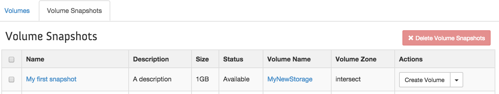
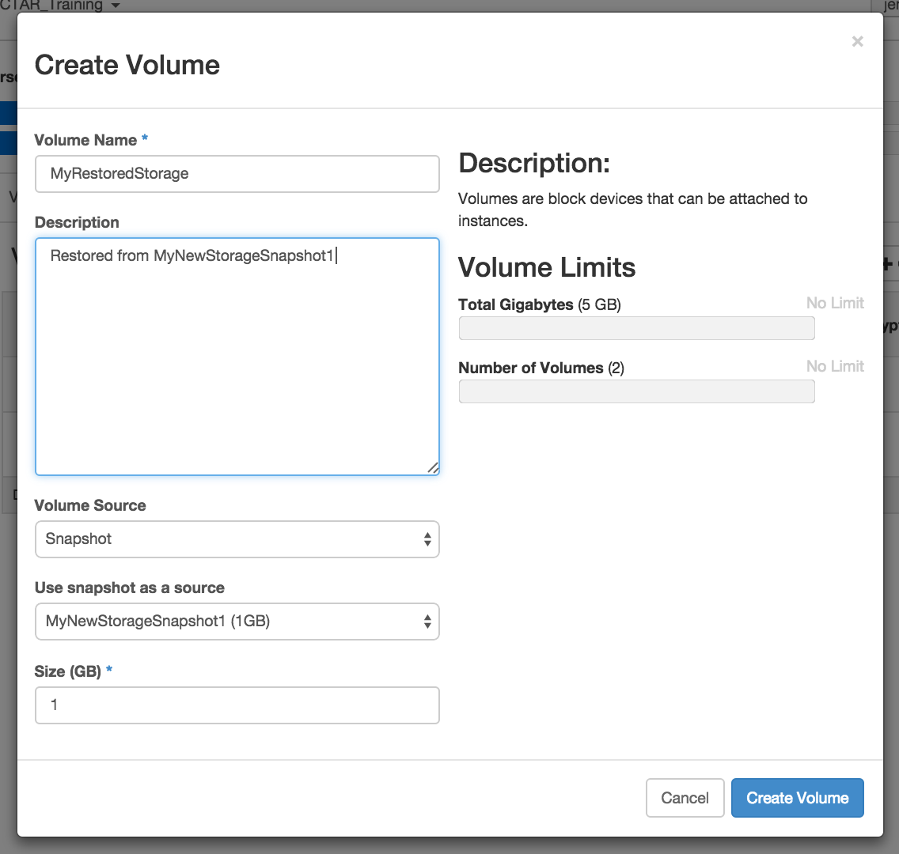

Module 9
Backing up and packing up
Sections of this module:
IntroductionSnapshots
Backing up
Cleaning up
Summary
View all sections on one page (Printer friendly)
Snapshots
You may copy the state of your instance, and later reboot it in this state. Copies of instances are called Snapshots. Snapshots of an instance can be used like other Images (e.g. like the Ubuntu Image we used in Module 7) to start new instances.
Snapshots only include data on your primary root disk. It is currently not possible to take Snapshots of the secondary ephemeral disk — the only way to save your data on the secondary ephemeral disk is to use other forms of backup, as discussed in the next section. But it is also possible to take Snapshots of Volumes.
In this section we are going to learn how to take Snapshots of instances and volumes. Then, we are going to re-create the state of the instances and volumes out of the snapshots.
Snapshots of an instance
Taking a Snapshot is simple: go to Dashboard > Compute > Instances and click “Create Snapshot” on the right hand side of the instance you wish to copy.

You may then choose a name for the Snapshot, and confirm with Create Snapshot. You will be redirected to the Images tab, which shows all your Images and Snapshots. In the list, you can see that your Snapshot is being created:

This process may take a while. While the Snapshot is being made, it will be listed with the Status “Queued”, then “Saving”, and finally it will be finished and in status “Active”. In the top row of the Images tab you can filter the Images to display. The current setting is “Project”: These are only your private Images. If you click on “NeCTAR official” you will see all the NeCTAR Images that are available to launch new instances. “Public” will show you even more Images you may use.

Instance Snapshots do not include the state of the secondary ephemeral disk, or of any volumes, even if they are currently mounted, e.g. on /data or /mnt.
On the same Images Tab, you may also delete your Snapshot at a later time. To delete a Snapshot, click on the right-hand side drop-down box of your Snapshot and select Delete Image.

It is possible to take a “Live Snapshot” (take a Snapshot of the machine that is currently running). In most cases, there should be no problem. However, if the instance is running while the Snapshot is being taken, the resulting Snapshot may be inconsistent. This is due to programs writing on the file system while a Snapshot is taken. There are a few options to prevent this inconsistency from happening:
- running “sync” before starting the Snapshot, or
- using a “file system freeze” utility which block programs writing on the filesystem,
- shutting down or pausing the instance before Snapshotting.
The easiest option is probably to pause or shut down the instance (which we will do later in this Module) and then take the Snapshot. For more information, refer to the OpenStack documentation.
Launch an instance from the Snapshot
It is easy to launch a new instance from a Snapshot. Simply go on the Dashboard > Compute > Images, select the Project filter on the top of the list, and you will get an overview of all your own Images. Find the Image you would like to launch a new instance from, and click Launch. The Launch window will come up, which is the same we already used in Module 7. The Snapshot Image will be pre-selected, and also the flavor of the Snapshotted instance. But you will still need to specify a few more settings:
- Choose an Instance Name,
- Keep or change the flavor (don’t pick a smaller though),
- Access & Security: Select key pair and security groups,
- Availability Zone (optional): Choose your Availability Zone,
- and possibly change other settings if you wish.
Snapshots of volumes
A Volume Snapshot creates a copy of the state of a Volume. It is similar to taking a Snapshot of an instance in that it creates an Image of which you can then create new Volumes. This is not necessarily the most ideal form of Backup, because each Snapshot takes up significant disk quota the same size of your Volume — even if the Volume still has lots of free space on it. For example, if you have a 50GB volume, but only use 1GB of data on it, then your Snapshot will still be 50GB. Also, you have limited quota available specifically for Snapshots. The next section will cover more suitable forms of backup for your data. However, you may still prefer to take a Snapshot of particular state of the volume, in order to easily create a new volume from it at a later time.
The original Volume on which the Snapshot was based must still exist, or the Snapshots of it become useless.
OpenStack does not let you delete Volumes which have “depending Snapshots”. So you have to be aware that the Snapshots are only usable while you keep your Volume in existence. This is different to Backups, which survive the deletion or a volume. Backups are are discussed in the next section.
Before taking a snapshot, you have to make sure your Volume is not attached to an instance — The volume has to be in the status “Available”.
To take a Snapshot of a Volume, go to Dashboard > Compute > Volumes and find the Volume you want to take a Snapshot of in the list. On the right-hand side, select Create Snapshot from the drop-down box.

A window will come up in which you type in a Snapshot name and a description. Confirm by clicking on Create Volume Snapshot. You will be redirected to the Volume Snapshots overview. You can get to this same page any time by via Dashboard > Compute > Volumes and then select the Tab Volume Snapshots.

To create a new Volume of a Snapshot, go to Dashboard > Compute > Volumes (or if you are still on the Volume Snapshots overview, simply select the Volumes Tab on top). This now works as we already have done in Module 7: Click on Create Volume. The Create Volume window will open.
Type in the name for the new Volume and a description. As Volume Source, select Snapshot. In Use snapshot as a source you may select the Snapshot you want to create the Volume from. As Size you should specify at least as much as the original Volume. (The size should be automatically pre-filled when you select your Snapshot. If you are unsure about the original size, you can also look it up on the Tab Volume Snapshots by clicking on the Snapshot name).

After clicking on Create Volume, your new Volume will be created and should appear in the list of your existing Volumes. You may now attach it to an instance and mount it from this instance to access the data, as we have done in Module 7.
You cannot delete a Volume while you have Snapshots of if saved. If you want to free up the Volume resource for other researchers, you have to delete all Snapshots too. So other forms of Backup will need to be used before you delete a Volume. The next section will discuss other forms of Backups.
Alternatively, you can use a technique similar to Snapshots: You can create an Image of the Volume, which you can then use to restore the Volume even after you have deleted it. This works in the same fashion as Snapshots, it only is a bit slower: Instead of Create Snaphot, now you select Upload to image. Name your Image accordingly so you can easily identify it. Your Volume Image will now appear along with all the instance Snapshots on Dahsboard > Compute > Images. When you create a new Volume, then as Volume Source, select Image, and select your Image as the Image as source.
Please be aware that “Upload to image” is not a suitable way to create regular backups, as it is slow and may take significant storage space on the Image Server. You should only use this for significant states of your Volumes, e.g. as a back-up just before you delete the Volume.

 This work is licensed under a
This work is licensed under a